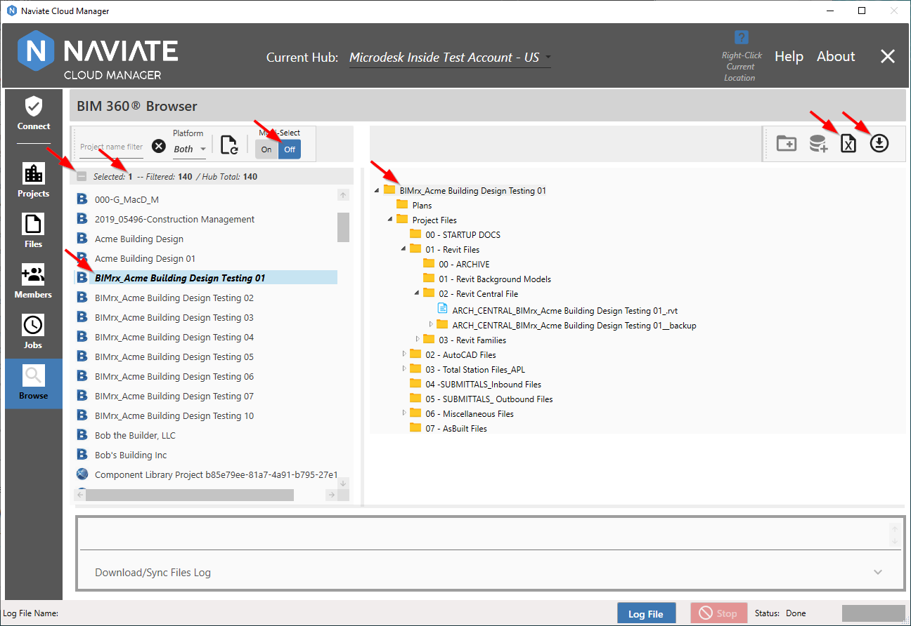
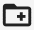
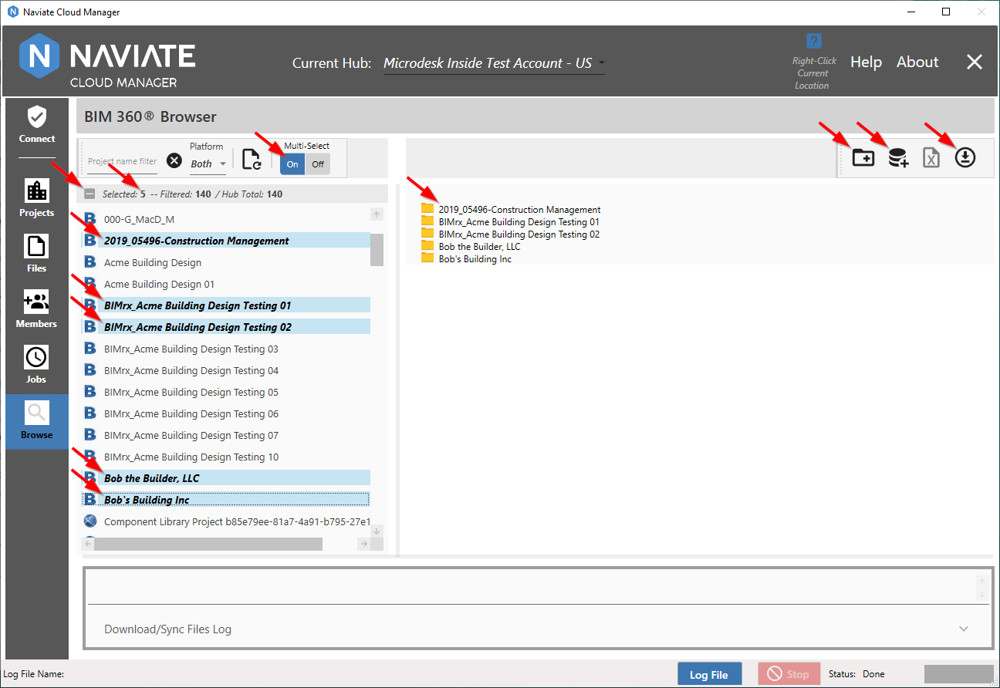
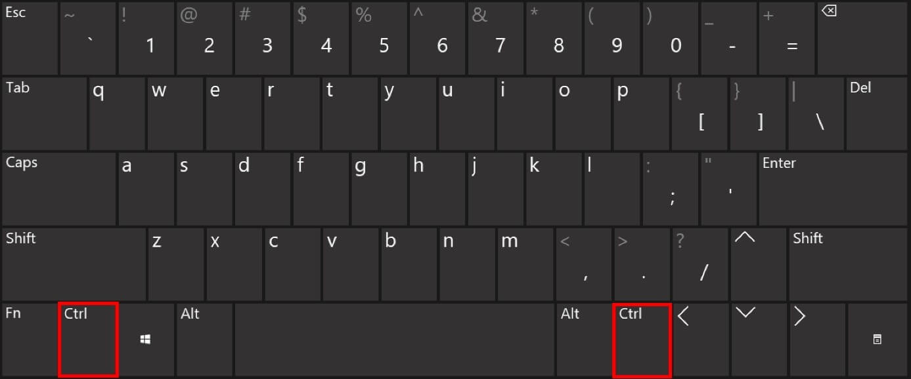
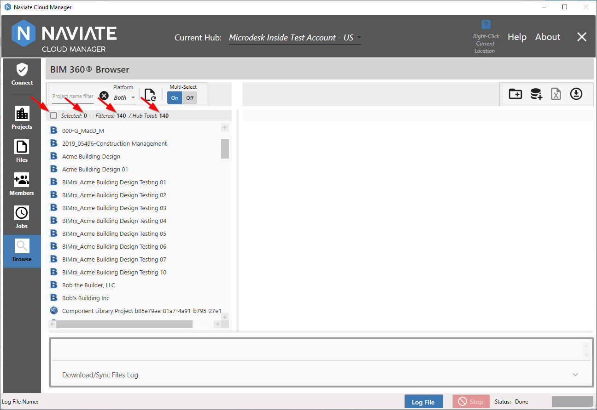
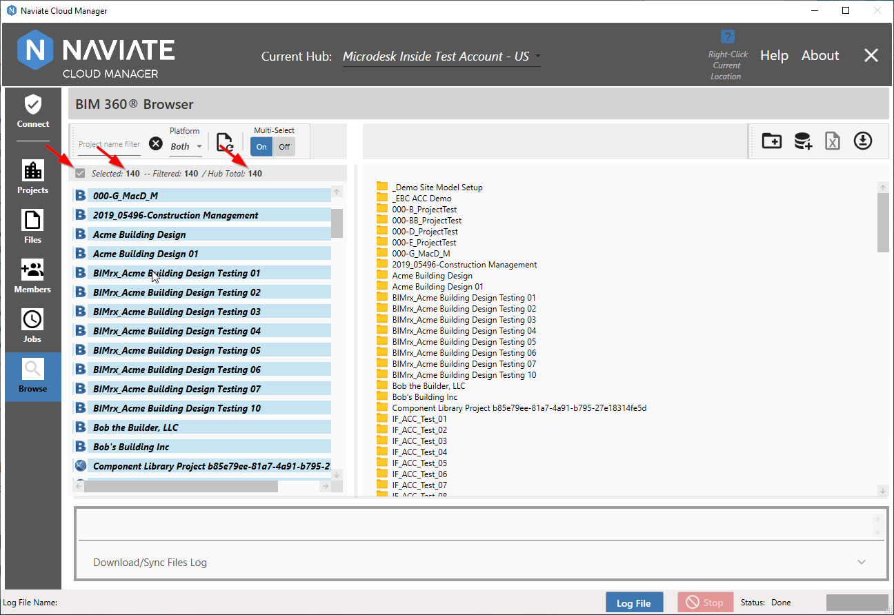
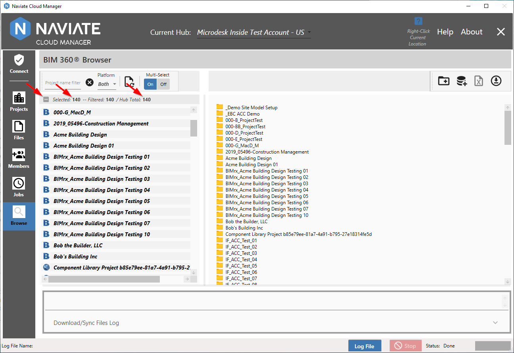
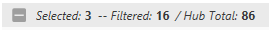
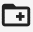

Multi-Select and Project Selection
Multi-Select controls whether only one project at a time may be selected or if multiple projects may be selected.
When Multi-Select is set to Off, only one project at a time is selected.

Clicking on a project selects the project, which is highlighted with bold letters. When first selected, the project is also highlighted as shown above.
Also, please note the Selected bar in between the project list and the toolbar. When in Single select mode, the checkbox is disabled. We will see shortly how this is used when Multi-Select mode is set to On, below. Just to the right of the checkbox is the total number of projects currently Selected. In Single select mode, this will either be 1 or 0. Finally, when Single selection mode is active, the project details display on the right side of the screen. For more information regarding this, refer to Project Details Display.
In addition to the data displayed, according to the current Multi-Select setting, different functionality either becomes available/not available or behaves differently when invoked. When in Single select mode, as shown above, the Update Project Database and Files Repo

and Update Project Database buttons are disabled and the functionality is not available. At the same time, the Export to Excel button is available. The Download Files button is unique in that it is always available regardless of the Multi-Select setting. For more general information, refer to Download Files to Local Disk. For Single select-specific information, refer to Download Files to Local Disk > Single Project.Multiple project selection provides a slightly different set of other interactions, data display and functionality.

Clicking on a project still selects the project. However, to select more than one project it is necessary to press the <Ctrl> button then click. This button could be labeled as either Ctrl or Control.
Depending on your computer, there will be one or two these keys located on the keyboard.

When selecting multiple projects, keep the <Ctrl> key depressed and each mouse click will select a new project. <Ctrl> clicking a project that is already selected will deselect it.
Additionally, with one project selected, pressing Shift-select on a different project will select all projects between them.
When multiple projects are selected, clicking on any project--without <Ctrl> or Shift pressed--will deselect everything and only the new project just clicked on will be selected.
As mentioned above, when in Single select mode, the checkbox is disabled. Now that we are in Multi-Select mode is set to On and is available for use. This is a three-state control which cycles through three different functions.

With 0 projects selected, the checkbox is empty and available for use.

Check it to select all projects for the current Hub.
Checking it again produces a somewhat different result.

The only thing that has changed here is the checkbox has gone from to and that is all. All projects are still selected and nothing else has changed beside the appearance of the checkbox. The reason for this is simple. The checkbox has three states: none selected, all selected and some selected. Clicking this control will always take it to the next setting on the above list--if it is currently set to none, clicking makes it all. If all are selected, clicking makes it 'some'. By 'some' here, it just means that more than 0 projects are selected. It doesn't matter if there are 1, 2 100 or all--whatever that is-- the icon means there is currently a quantity selected. And finally, clicking it again from the 'some'/ setting brings us back to 0/ projects selected and we're ready to begin the cycle once again.
Just to the right of the checkbox is the Project Status display.

At all times, Naviate Cloud Manager shows the total number of projects currently Selected. Additionally, it clearly states both the current filtered amount and the total number of projects for the current connected Hub. For more information, please refer to Project Filters.
Note — The Selected button is a 3-state control and, when directly clicked, functions the same as similar buttons found elsewhere throughout Naviate Cloud Manager:
|
Button state before clicking |
Button state before clicking |
Result |
|
All currently visible projects are selected. If no filter is set, then all projects are selected. If a filter are set, only those rows displayed by the filter are selected. |
||
|
No change occurs. Button can also arrive at this setting as a result of manually unchecking one or more of the projects when all projects have been checked. |
||
|
All projects are deselected, regardless of filter setting. |
In addition to the level of data displayed--project details in Single mode, project names in Multiple mode, as discussed above, when in Multiple mode different functionality either becomes available/not available or behaves differently when invoked. When in Multiple select mode, as shown above, the Update Project Database and Files Repo

and Update Project Database buttons are enabled and the functionality is fully available. At the same time, the Export to Excel button is not available. The Download Files button , however, is always available, regardless of the Multi-Select setting. For more general information, refer to Download Files to Local Disk. For Single select-specific information, refer to Download Files to Local Disk > Single Project.